Cambridge AS9618 | Paper 2 | Section 10: Data types and structures
Choosing and combining data structures
Flexible-depth lesson
S10.04, S10.09 | Learn from the diagrams, test the method, then choose the practice you need.
Choose a Quick, Full or Deep route
Quick route
Use the diagnostic, learning objectives, first worked example and foundation question. Stop once the learner can explain the central distinction accurately.
Full route
Use every knowledge-point material set, the worked method, the terminology check and all questions.
Deep route
Add the prerequisite refresher, ask learners to connect the concept checklist, discuss the labelled extension and complete a transfer question without a model answer.
Part 1 | optional depth
Prerequisite knowledge and quick diagnostic
Recall S10.03, S10.08 before starting this lesson.
Give one accurate definition or method step before continuing. If it is missing, revisit only that prerequisite.
Open optional prerequisite refresher
Use the technical terms associated with arrays, including index, lower bound and upper bound. Bounds define the inclusive valid index range and an index selects one element.
Understand array, index, lower bound and upper bound terminology.
An abstract data type (ADT) is a collection of data and a set of operations on those data. Its behaviour is defined independently of a particular storage implementation.
Understand the definition and purpose of an abstract data type.
Part 2 | knowledge-point material sets
Learn each point through visuals
Follow the map, the three-part explanation and the concrete cue. Open precise wording only after the idea is clear.
Open the concept checklist and choose what to teach
one-dimensional / 1D
two-dimensional / 2D
select / suitable
stack
queue
linked list
LIFO
FIFO
justify
01
S10.04 · decision
One-dimensional · Two-dimensional · Select
Concept map
one-dimensionaltwo-dimensionalselect
See how it works
Evidencetwo indexes suit data with a genuine row-column or equivalent two-coordinate relationship
ChoiceSelect a suitable one-dimensional (1D) or two-dimensional (2D) array for a given task
ReasonA two-dimensional array uses two indexes, normally interpreted as row and column
S10.04 diagrams
1 / 3
01
Diagram · 1 of 3
A one-dimensional array is a linear collection
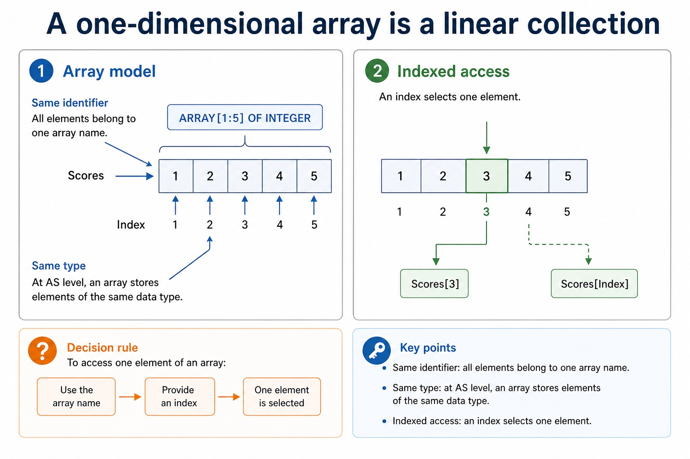
Open text transcript
Array model
Same identifier
All elements belong to one array name.
Same type
At AS level, an array stores elements of the same data type.
ARRAY[1:5] OF INTEGER
Indexed access
An index selects one element.
02
Diagram · 2 of 3
Rows and columns create coordinates
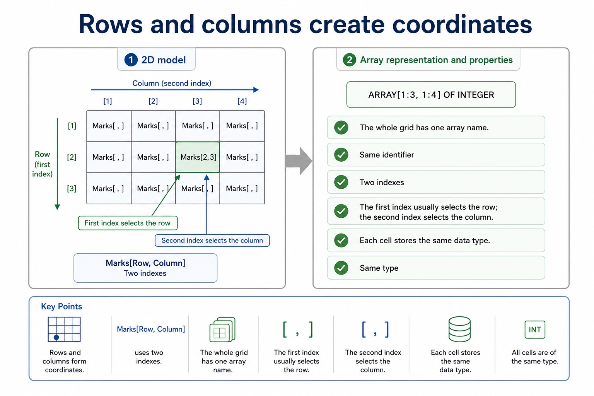
Open text transcript
2D model
Same identifier
The whole grid has one array name.
Two indexes
The first index usually selects the row; the second index selects the column.
Marks[Row, Column]
Same type
Each cell stores the same data type.
03
Comparison · 3 of 3
Linear search checks each item in order
Open text transcript
Knowledge explanation
How it works
Start at the first item. Compare it with the target. If it matches, stop. If not, move to the next item until found or the list ends.
When it is suitable
Use it when data is unsorted, the list is small, or simplicity matters more than speed.
Worst case: the target is last or absent, so every item may be checked.
Open precise syllabus wording
Select one- or two-dimensional arrays for a scenario.
Select a suitable one-dimensional (1D) or two-dimensional (2D) array for a given task. One index suits a linear collection; two indexes suit data with a genuine row-column or equivalent two-coordinate relationship.
02
S10.09 · decision
Stack · Queue · Linked list · LIFO
Concept map
stackqueuelinked listLIFOFIFOjustify
See how it works
EvidenceDescribe their key features and justify which structure suits a given situation using LIFO, FIFO or link-based traversal/insertion/deletion evidence
ChoiceStack, queue and linked list are examples of ADTs
ReasonA changing ordered playlist can use a linked list for link-based insertion/deletion
S10.09 diagrams
1 / 4
01
Diagram · 1 of 4
Implement stack, queue and linked list using arrays
Open text transcript
An array stack uses Top; a queue uses Front and Rear; a linked list uses Data, Next, Start and a free list.
Add/delete preserve stack LIFO, queue FIFO and linked-list links; edit changes stored data without corrupting structure.
Candidates are not required to write pseudocode for these ADT operations; understand add, edit, delete and array implementation.
02
Comparison · 2 of 4
Match scenario evidence to structure features
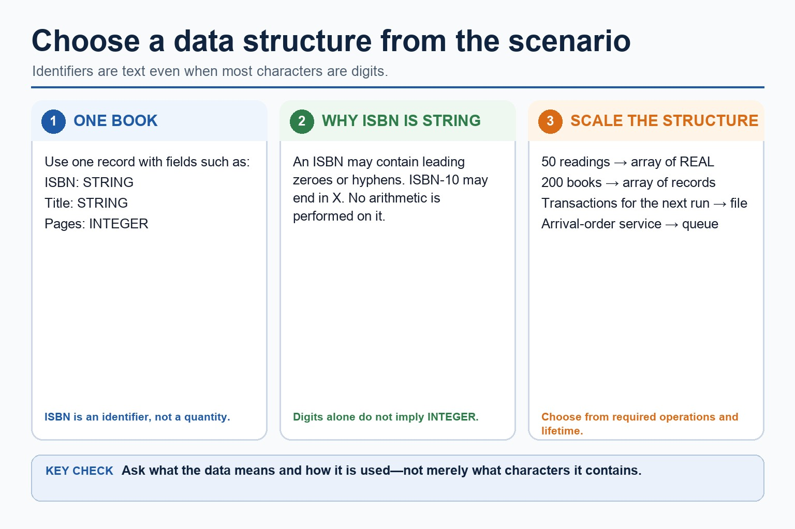
Open text transcript
Store one book as a record with ISBN, title and pages fields.
Store ISBN as STRING because it is an identifier, may contain leading zeroes or hyphens, and ISBN-10 may end in X.
Store many books with the same fields as an array of records.
Use a file when data must remain available for a later program run.
Choose a queue when requests must be served in arrival order.
03
Concrete example · 3 of 4
An ADT is data together with permitted operations
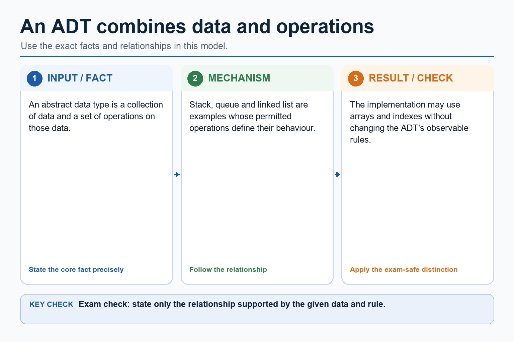
Open text transcript
An abstract data type is a collection of data and a set of operations on those data.
Stack, queue and linked list are examples whose permitted operations define their behaviour.
The implementation may use arrays and indexes without changing the ADT's observable rules.
04
Diagram · 4 of 4
Justify the data structure in Cambridge answers
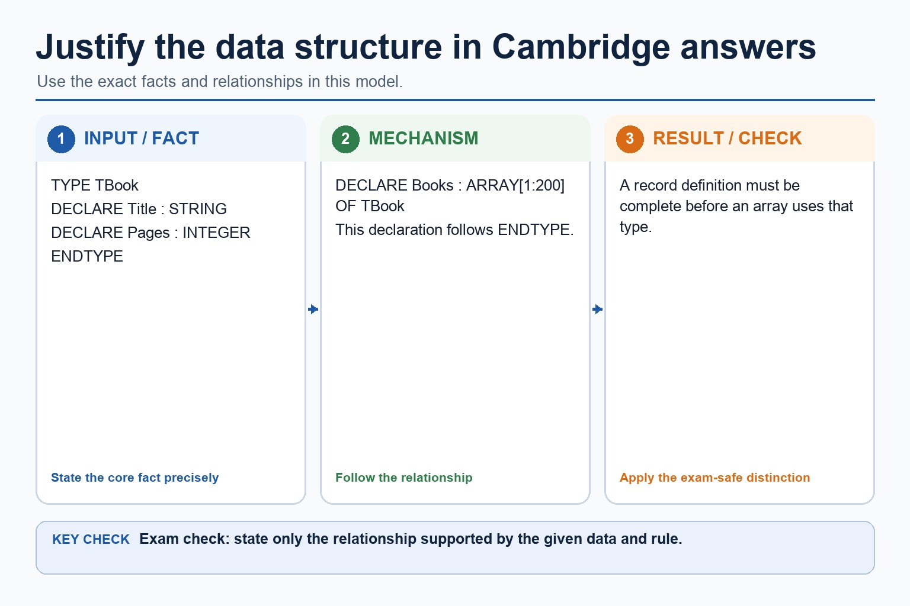
Open text transcript
TYPE TBook
DECLARE Books : ARRAY[1:200] OF TBook
A record definition must be complete before an array uses that type.
Open precise syllabus wording
Understand stack, queue and linked-list features; justify a structure.
Stack, queue and linked list are examples of ADTs. Describe their key features and justify which structure suits a given situation using LIFO, FIFO or link-based traversal/insertion/deletion evidence.
Supporting diagram library
1 / 34
01
Diagram · 1 of 34
The index points to exactly one element
Open text transcript
Cambridge array declarations state an explicit lower and upper bound.
Valid indexes follow the declared bounds and are not universally zero-based.
Label 0 to n-1 as a chosen zero-based example, or use the lesson's declared bounds consistently.
02
Diagram · 2 of 34
Bounds say which indexes are valid
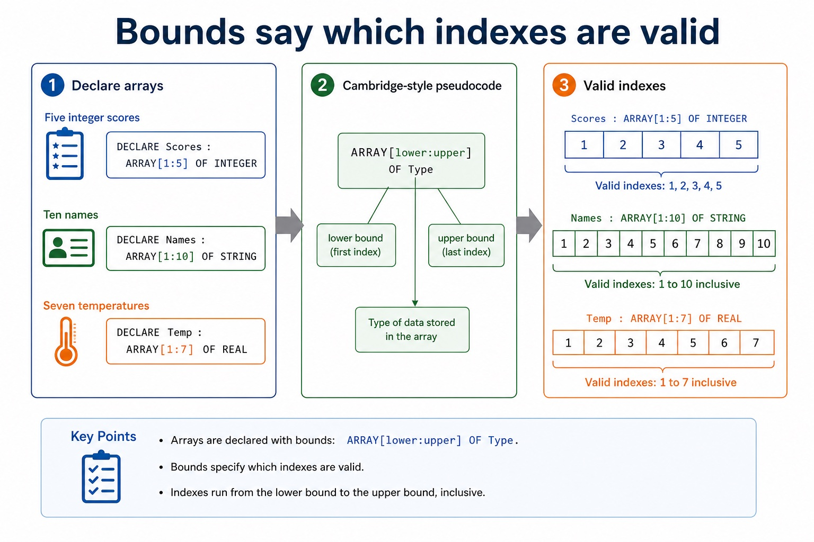
Open text transcript
Declare arrays
Cambridge-style pseudocode
Valid indexes
Five integer scores
DECLARE Scores : ARRAY[1:5] OF INTEGER
1, 2, 3, 4, 5
Ten names
DECLARE Names : ARRAY[1:10] OF STRING
03
Diagram · 3 of 34
Access one element
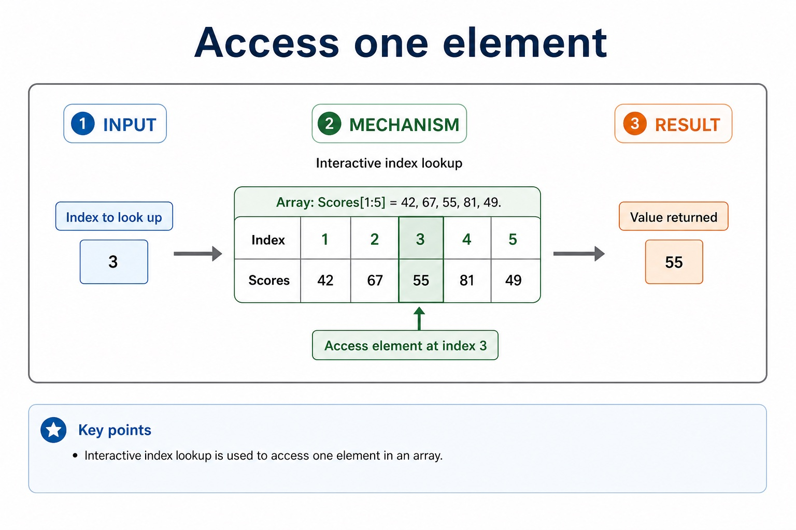
Open text transcript
Interactive index lookup
Array: Scores[1:5] = 42, 67, 55, 81, 49.
04
Diagram · 4 of 34
Cambridge bounds and Java indexes are not the same habit
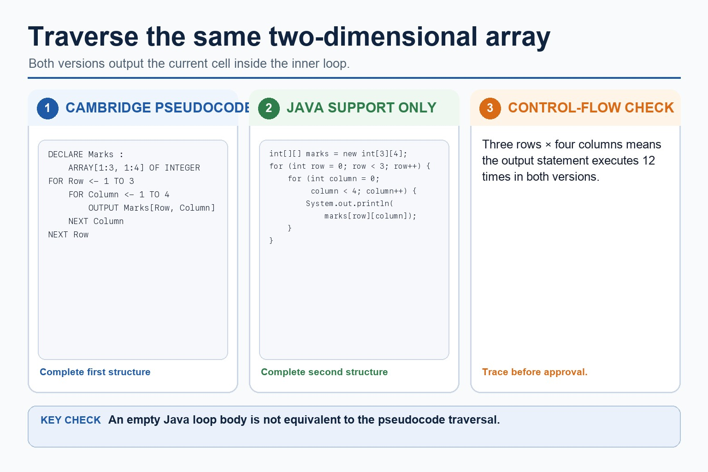
Open text transcript
Pseudocode vs Java
Cambridge-style pseudocode
DECLARE Scores : ARRAY[1:5] OF INTEGER
FOR Index <- 1 TO 5
INPUT Scores[Index]
NEXT Index
Java support only
int[] scores = new int[5];
05
Diagram · 5 of 34
Do not import Java indexing into Cambridge answers
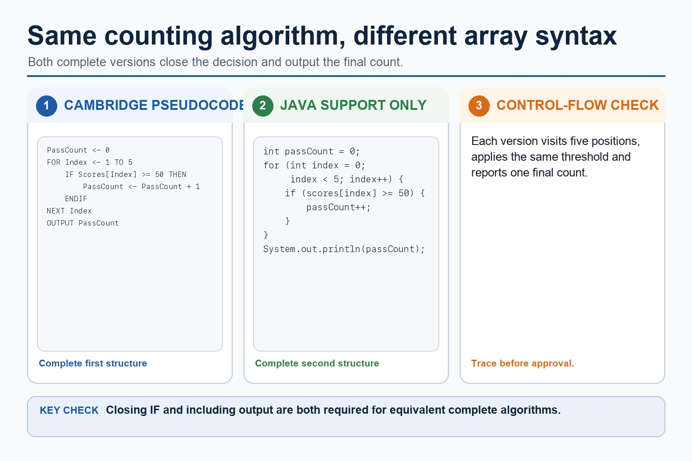
Open text transcript
Traverse a 3 by 4 array with nested loops.
Output the current cell inside the inner loop.
A corresponding Java support version must also output every current cell.
The two versions use explicitly stated indexing conventions.
06
Diagram · 6 of 34
Use a loop to visit every element
Open text transcript
Traversal
Input all scores
FOR Index <- 1 TO 5
INPUT Scores[Index]
NEXT Index
Total all scores
Total <- 0
Total <- Total + Scores[Index]
07
Diagram · 7 of 34
A cell needs row and column
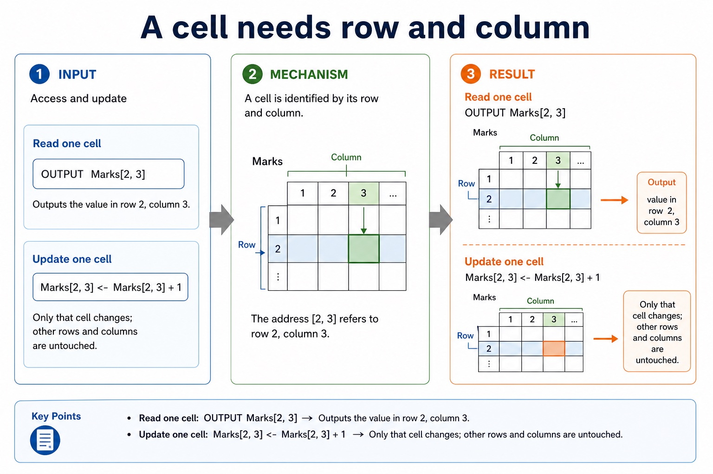
Open text transcript
Access and update
Read one cell
OUTPUT Marks[2, 3]
Outputs the value in row 2, column 3.
Update one cell
Marks[2, 3] <- Marks[2, 3] + 1
Only that cell changes; other rows and columns are untouched.
08
Diagram · 8 of 34
Two dimensions need two ranges
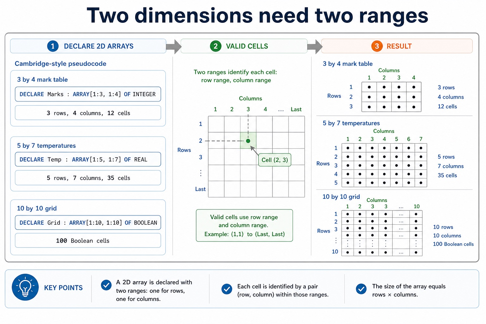
Open text transcript
Declare 2D arrays
Cambridge-style pseudocode
Valid cells
3 by 4 mark table
DECLARE Marks : ARRAY[1:3, 1:4] OF INTEGER
3 rows, 4 columns, 12 cells
5 by 7 temperatures
DECLARE Temp : ARRAY[1:5, 1:7] OF REAL
09
Diagram · 9 of 34
Read Marks[Row, Column]
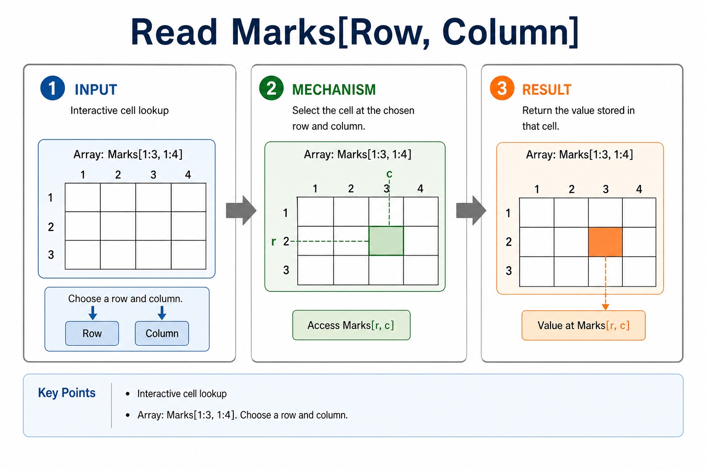
Open text transcript
Interactive cell lookup
Array: Marks[1:3, 1:4]. Choose a row and column.
10
Diagram · 10 of 34
Outer row loop, inner column loop
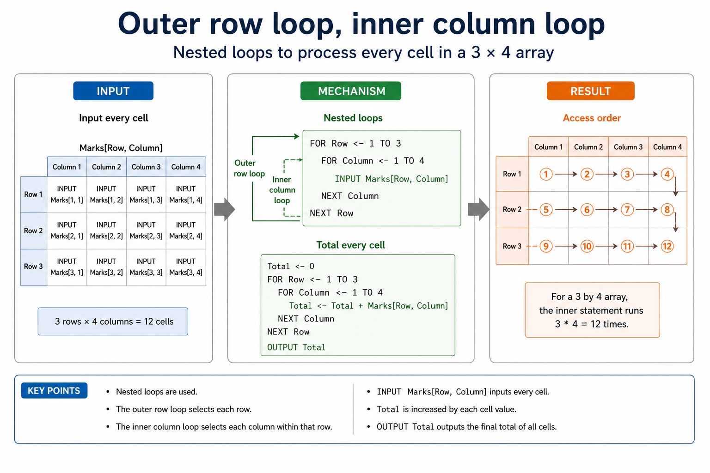
Open text transcript
Nested loops
Input every cell
FOR Row <- 1 TO 3
FOR Column <- 1 TO 4
INPUT Marks[Row, Column]
NEXT Column
NEXT Row
Total every cell
11
Diagram · 11 of 34
A text file stores characters, usually processed one line at a time
Open text transcript
Exam clue
Text file
file containing character data
"Scores.txt"
get data from an existing file
FOR READ
store data to a file, often replacing previous contents
FOR WRITE
12
Diagram · 12 of 34
Open, process, close
Open text transcript
File lifecycle
1. Open choose READ, WRITE or APPEND
2. Process READFILE or WRITEFILE using variables
3. Close release the file and finalise changes
A file algorithm without CLOSEFILE is like leaving the exam hall without submitting the answer booklet.
13
Diagram · 13 of 34
Choose the correct file mode
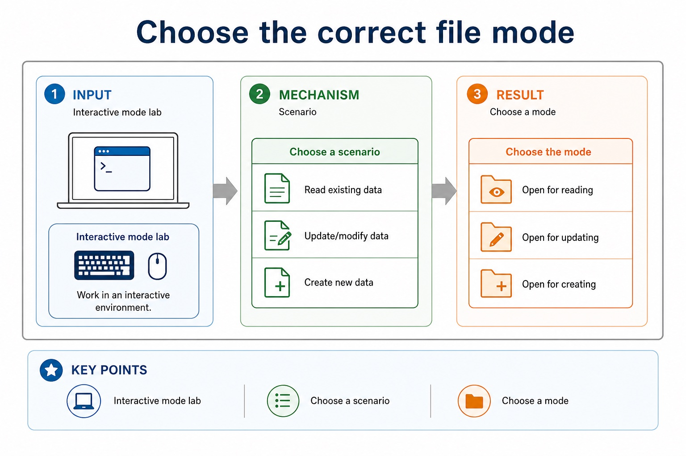
Open text transcript
Interactive mode lab
Scenario
Choose a scenario and a mode.
14
Diagram · 14 of 34
Choose the mode before touching the file
Open text transcript
File modes
Use when
Risk if wrong
existing file contents are needed
cannot write new lines
creating/replacing output contents
old contents may be overwritten
adding new data to the end
15
Diagram · 15 of 34
Why two ends create FIFO
Open text transcript
Enqueue adds a new item at the rear.
Dequeue removes the waiting item at the front.
Earlier arrivals remain ahead of later arrivals.
16
Diagram · 16 of 34
Use EOF so the loop stops at the end of the file
Open text transcript
Read loop
OPENFILE "Scores.txt" FOR READ
WHILE NOT EOF("Scores.txt")
READFILE "Scores.txt", Line
OUTPUT Line
ENDWHILE
CLOSEFILE "Scores.txt"
The file line is read into Line . Only after that can the program output, split or validate it.
17
Diagram · 17 of 34
Step through a WHILE NOT EOF loop
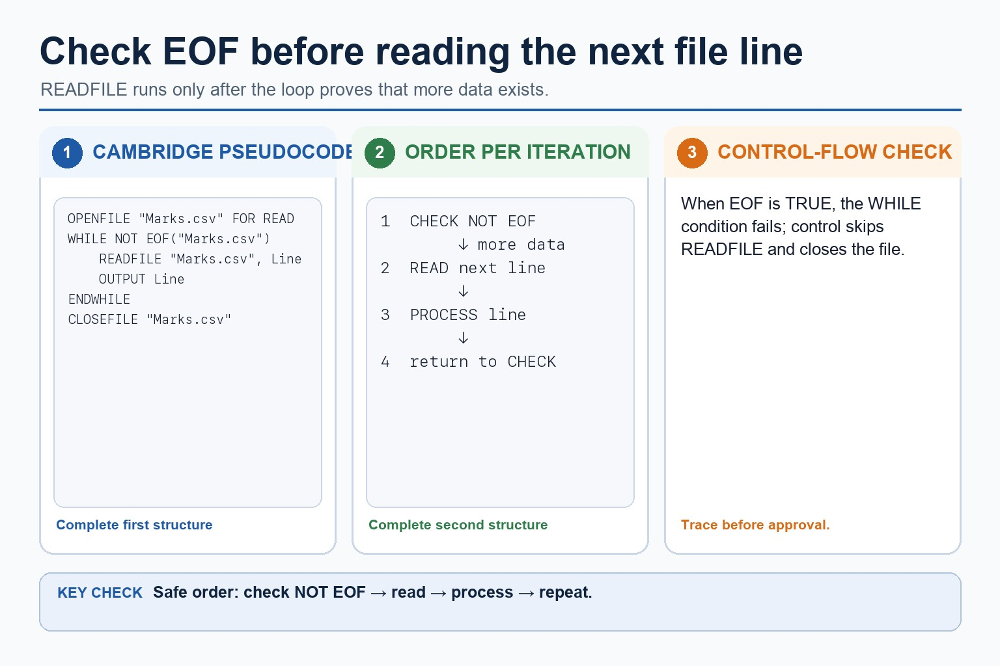
Open text transcript
Open the file for reading before entering the loop.
Check NOT EOF before attempting READFILE.
When more data exists, read and process the next line.
When EOF is true, skip READFILE, leave the loop and close the file.
18
Diagram · 18 of 34
A text line often represents one record
Open text transcript
Text records
In simple exam-style examples, one line may contain fields separated by a comma. The delimiter must be consistent.
Name = Ali
Mark = 72
Name = Bea
Mark = 64
19
Diagram · 19 of 34
Why one open end creates LIFO
Open text transcript
Push adds the new item at the top position.
Only the current top item is available to pop.
The most recently pushed item therefore leaves first.
20
Diagram · 20 of 34
Write creates a new result; append adds to the existing story
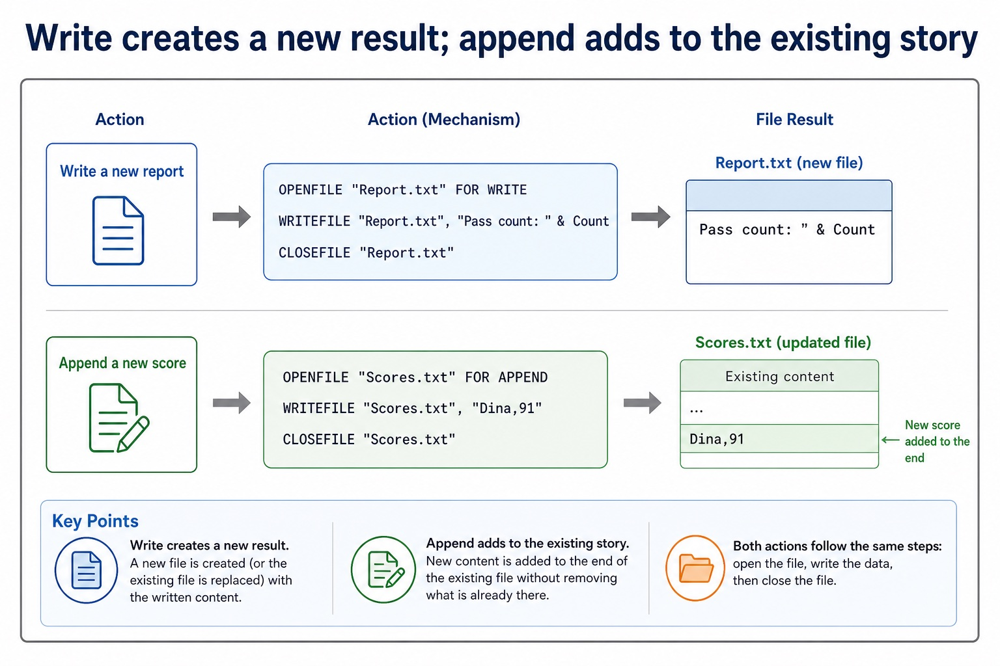
Open text transcript
Write and append
Write a new report
OPENFILE "Report.txt" FOR WRITE
WRITEFILE "Report.txt", "Pass count: " & Count
CLOSEFILE "Report.txt"
Append a new score
OPENFILE "Scores.txt" FOR APPEND
WRITEFILE "Scores.txt", "Dina,91"
21
Diagram · 21 of 34
CSV-style means separated fields in a fixed order
Open text transcript
one complete line of data
S001,Ali,72
one item inside the record
Delimiter
character that separates fields
Fixed order
each position has agreed meaning
ID, Name, Mark
22
Diagram · 22 of 34
Design the format before writing code
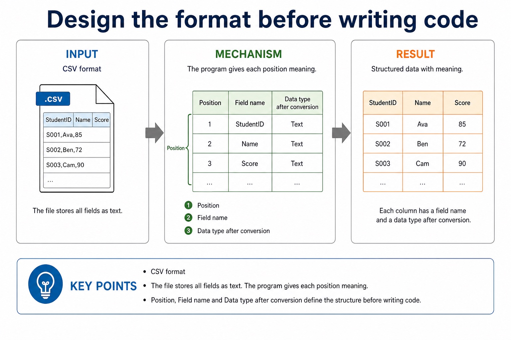
Open text transcript
CSV format
Position
Field name
Data type after conversion
StudentID
The file stores all fields as text. The program gives each position meaning.
23
Diagram · 23 of 34
Use question-supplied CSV functions exactly
Open text transcript
The question supplies FUNCTION SPLIT(Line : STRING, Delimiter : CHAR) RETURNS ARRAY OF STRING.
The supplied SPLIT result uses indexes starting at 1; for three fields, use Fields[1], Fields[2] and Fields[3].
The question also supplies FUNCTION STRINGTOINTEGER(Value : STRING) RETURNS INTEGER.
Read the line first, then call the supplied functions using their stated parameter order and return types.
24
Diagram · 24 of 34
Split a line into fields
Open text transcript
Interactive CSV parser
CSV line
Delimiter
Enter a line and split it into fields.
25
Diagram · 25 of 34
Question-supplied functions versus Java methods
Open text transcript
SPLIT and STRINGTOINTEGER are not standard functions in the Cambridge pseudocode guide; this example uses signatures supplied by the question.
FUNCTION SPLIT(Line : STRING, Delimiter : CHAR) RETURNS ARRAY OF STRING; its first returned element is at index 1.
FUNCTION STRINGTOINTEGER(Value : STRING) RETURNS INTEGER.
Java split and parseInt are support examples only and use different syntax and zero-based array indexes.
26
Diagram · 26 of 34
Convert CSV text before numeric comparison
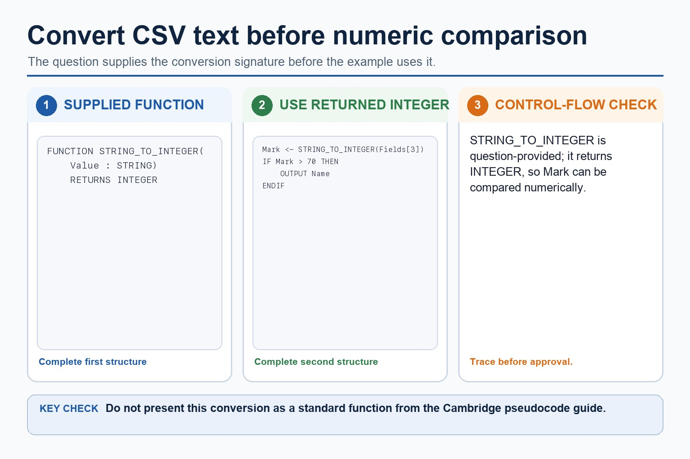
Open text transcript
CSV fields arrive as text; the question supplies FUNCTION STRINGTOINTEGER(Value : STRING) RETURNS INTEGER.
Use the returned INTEGER for a numeric comparison and close every IF example with ENDIF.
Do not present STRINGTOINTEGER as a standard Cambridge pseudocode-guide function.
Structural closure and type conversion solve different problems.
27
Diagram · 27 of 34
A structured file can still contain bad lines
Open text transcript
Validation
Correction prompt
S003,Chen
missing Mark field
check field count before using Fields[3]
S004,Dina,Ninety
mark is not numeric
validate before converting to INTEGER
28
Diagram · 28 of 34
Check field count and mark type
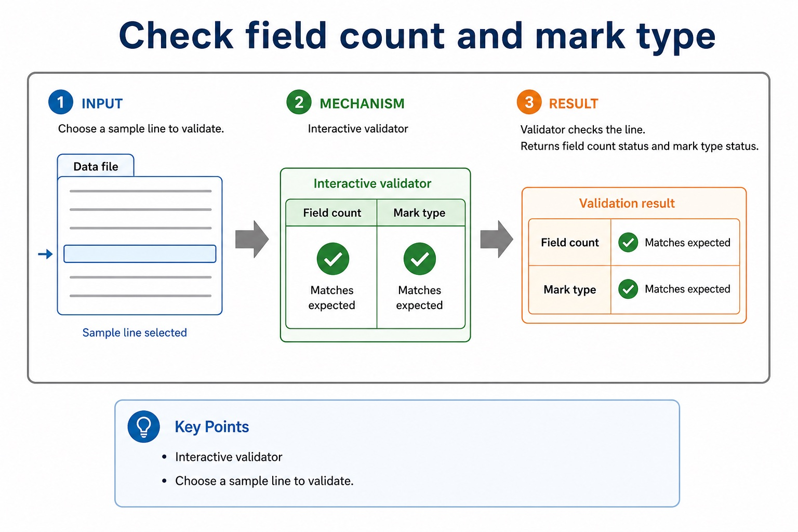
Open text transcript
Interactive validator
Choose a sample line to validate.
29
Diagram · 29 of 34
Use ADTs when the removal rule matters
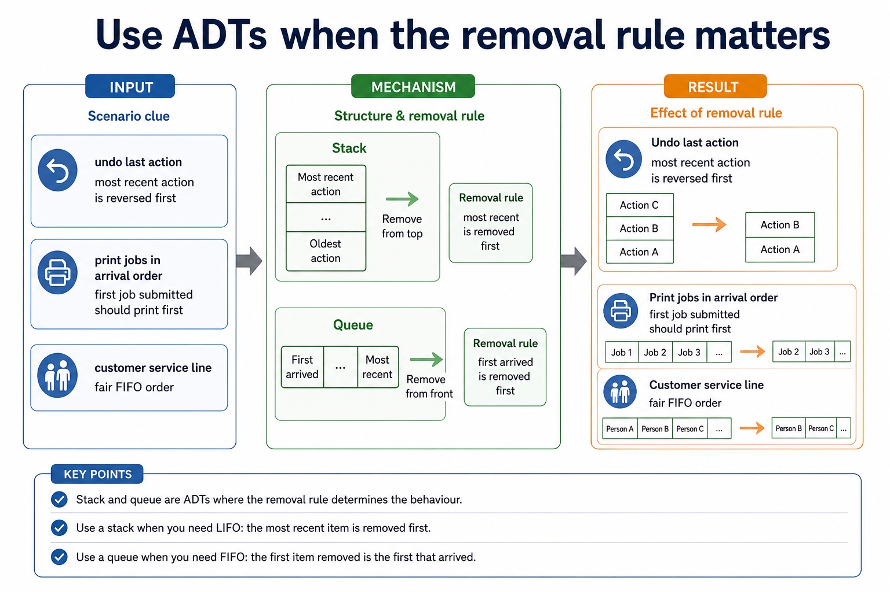
Open text transcript
Stack and queue
Scenario clue
Structure
undo last action
most recent action is reversed first
print jobs in arrival order
first job submitted should print first
customer service line
30
Diagram · 30 of 34
Use arrays for many similar values accessed by index
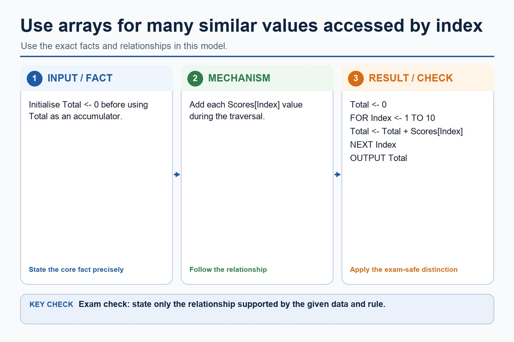
Open text transcript
Initialise Total <- 0 before using Total as an accumulator.
Add each Scores[Index] value during the traversal.
Total <- 0
31
Diagram · 31 of 34
Start with the data and operations, not the keyword
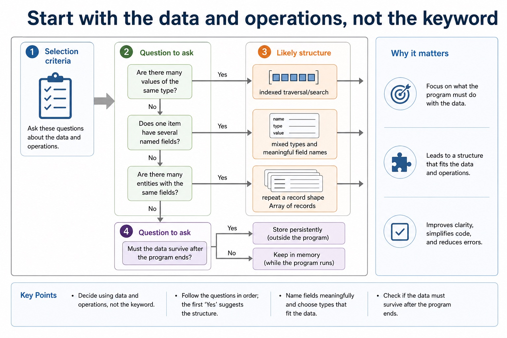
Open text transcript
Selection criteria
Question to ask
Why it matters
Likely structure
Are there many values of the same type?
indexed traversal/search
Does one item have several named fields?
mixed types and meaningful field names
32
Diagram · 32 of 34
Use files when data must persist or be exchanged
Open text transcript
OPENFILE "Scores.csv" FOR APPEND
WRITEFILE "Scores.csv", NewLine
CLOSEFILE "Scores.csv"
Good reason: the data must be stored after the program has finished, so memory-only structures are not enough.
33
Diagram · 33 of 34
Spot the answer that would earn marks
Open text transcript
Reason ranker
Choose the answer with scenario evidence and consequence.
34
Diagram · 34 of 34
Use records when named fields belong to one entity
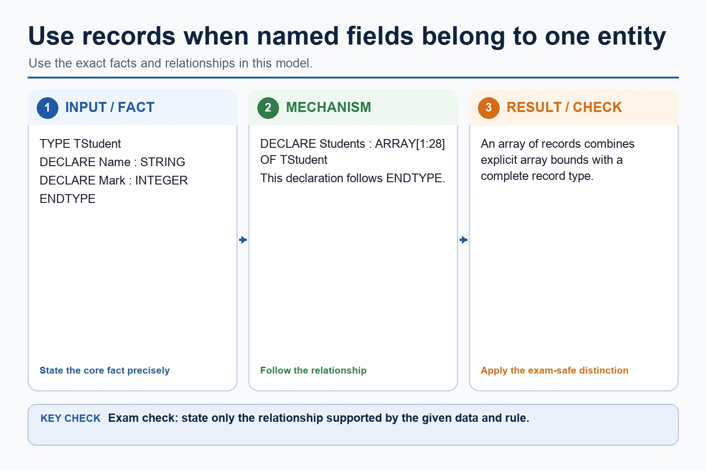
Open text transcript
TYPE TStudent
DECLARE Students : ARRAY[1:28] OF TStudent
An array of records combines explicit array bounds with a complete record type.
Apply the idea
Worked method
01Undo history uses a stack because the most recent action is undone first.
02Print jobs use a queue because the earliest accepted job prints first.
03A changing ordered playlist can use a linked list for link-based insertion/deletion.
Open precise terminology and exam facts
Select a suitable one-dimensional (1D) or two-dimensional (2D) array for a given task. One index suits a linear collection; two indexes suit data with a genuine row-column or equivalent two-coordinate relationship.
Stack, queue and linked list are examples of ADTs. Describe their key features and justify which structure suits a given situation using LIFO, FIFO or link-based traversal/insertion/deletion evidence.
An array is a collection of elements stored under one identifier. An index selects one element. The lower bound is the first valid index and the upper bound is the last valid index; both bounds are inclusive in a Cambridge declaration such as ARRAY[1:20] OF INTEGER.
Choose a one-dimensional array when each element needs one position, such as twenty marks or a list of names. Choose a two-dimensional array when each value naturally needs a row and a column, such as marks for several students across several tests. Do not choose 2D merely because there are many values.
One-dimensional array pseudocode must declare explicit bounds and an element type, access elements with one index and use loop bounds that match the declared lower and upper bounds. The number of elements is upper bound - lower bound + 1.
A two-dimensional array uses two indexes, normally interpreted as row and column. In DECLARE Marks : ARRAY[1:30, 1:4] OF INTEGER, the first range gives 30 valid row indexes and the second gives 4 valid column indexes, for 120 cells.
Select 2D when the scenario has two independent position dimensions, such as Student and Test, Row and Column, or Day and Period. A simple list, sequence or one category of positions remains 1D even when it contains many elements.
Two-dimensional pseudocode declares both ranges, accesses one cell as Marks[Student, Test] and normally uses nested loops: one loop traverses rows and the inner loop traverses every column for the current row.
An abstract data type (ADT) is a collection of data and a set of operations on those data. The permitted operations and their effects define the ADT; its internal storage can change without changing that behaviour. Stack, queue and linked list are examples of ADTs.
A stack is LIFO: add with push and delete with pop at the top. A queue is FIFO: add with enqueue at the rear and delete with dequeue at the front. A linked list stores data plus a next pointer/index in each node; start identifies the first node and null ends the chain.
All three can be implemented using arrays and state variables or indexes. Stack uses an array with a top/stack pointer; queue uses an array with front and rear; linked list uses Data and Next arrays (or an array of node records), start and a free list. Candidates must be able to add, edit and delete data conceptually, but the syllabus does not require pseudocode for these ADT operations.
Editing changes the stored data without breaking the access rule or links. Deleting from a linked list reconnects the predecessor to the removed node's successor and returns the freed array slot to the free list; physical array positions need not follow logical list order.
Beyond syllabus / 延伸知识（不要求背诵）
programming libraries often provide tested ADT implementations, but the exam expects you to understand their behaviour and selection.
Part 3 | select by learner need
Practice by question type
applyrecallfoundation2 marks
Question 1. What is wrong with Marks[Row] for a 2D array?
Show answer and marking guidance
Answer: It supplies only one index and therefore does not identify a column or one complete cell.
Marking guidance: Award one mark for each distinct, technically accurate point or method step.
Common error: For the command word apply, perform that exact action; do not replace it with an unrelated fact.
staterecallapplication2 marks
Question 2. State two precise facts about choosing and combining data structures.
Show answer and marking guidance
Answer: Select a suitable one-dimensional (1D) or two-dimensional (2D) array for a given task. One index suits a linear collection; two indexes suit data with a genuine row-column or equivalent two-coordinate relationship. Stack, queue and linked list are examples of ADTs. Describe their key features and justify which structure suits a given situation using LIFO, FIFO or link-based traversal/insertion/deletion evidence.
Marking guidance: Award one mark for each distinct fact; do not credit a repeated point.
Common error: Do not repeat the same point in different words; each mark needs a separate idea or method step.
explainexplaintransfer3 marks
Question 3. Explain how choosing and combining data structures would be applied in a suitable computing context.
Show answer and marking guidance
Answer: Stack, queue and linked list are examples of ADTs. Describe their key features and justify which structure suits a given situation using LIFO, FIFO or link-based traversal/insertion/deletion evidence. An array is a collection of elements stored under one identifier. An index selects one element. The lower bound is the first valid index and the upper bound is the last valid index; both bounds are inclusive in a Cambridge declaration such as ARRAY[1:20] OF INTEGER. Choose a one-dimensional array when each element needs one position, such as twenty marks or a list of names. Choose a two-dimensional array when each value naturally needs a row and a column, such as marks for several students across several tests. Do not choose 2D merely because there are many values.
Marking guidance: Each mark needs a relevant point linked to the stated context.
Common error: Do not copy the worked example unchanged; transfer the method and check it against the new context.
Related past-paper indexes
Reference
Marks
Command word
Question type
9618/23/S/25 Q5(b)
3
describe
explain
9618/23/S/25 Q5(c)
2
describe
explain
9618/23/S/25 Q5(ii)
1
state
recall
9618/22/W/23 Q4(b)
4
complete
recall
Index only: Cambridge question and mark-scheme wording is not reproduced on this public course page.
Part 4 | close when ready
Summary and exam reminders
Summary
Define choosing and combining data structures with the exact technical vocabulary expected by the syllabus.
Use the lesson method on a fresh context and show the intermediate decision, representation or calculation.
Match the shape of the answer to the command word and the available marks.
Check the final answer against the scenario instead of repeating a memorised sentence.
Common error to correct
Students often confuse the identifier of the whole structure with one element. Correction: access requires an index or field name.
Exam technique
Follow the command word: state gives a fact; explain links a cause to a consequence; compare covers both sides.
Match the number of independent points or method steps to the available marks.
For choosing and combining data structures, use the exact technical term before applying it to the scenario.